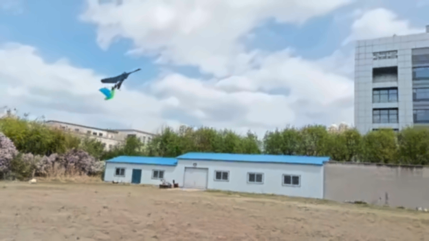

An improved quasi-steady model capable of calculating flexible deformation for bird-sized flapping wings

Overview
The study develops a quasi-steady aerodynamic model that explicitly couples flexible wing deformation with the local relative flow. It targets rapid prediction of bird-sized flapping-wing behavior across changes in wing structure and operating conditions.
Main contributions
Two-way coupling of aerodynamics and deformation
An aerodynamic solver and a structural deformation solver exchange surface loads and local flow information, rather than treating wing flexibility as a fixed empirical correction.
A partitioned iterative solution
At each time step, the solvers update wing displacement and aerodynamic loading until convergence, reducing reliance on empirical coefficients when geometry or flight conditions change.
Separate experimental checks of deformation and forces
Wind-tunnel tests use high-speed imaging and a six-axis force sensor to evaluate deformation and aerodynamic loads. The paper reports force prediction errors within 5% over its common flight-parameter range.
Model-guided design of two flapping-wing prototypes
The model supports parameter selection for a continuous-rotation prototype and a micro-servo-driven prototype; flight tests demonstrate the resulting designs.
Summary based on the published paper.